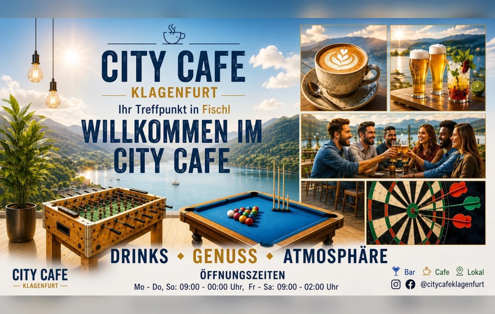

Karaoke-Kandidat für den 29.08.
Bist du dabei? • Wunschsong abgeben
Titel 1 von 3
🎤 Vorgeschmack auf den 29.08.
📅 2026
🎵 Genre
Lade Musik...
"Titel..."

V1
⚽ 1. Bundesliga · Spieltag –
Ergebnisse & Anstoßzeiten
Stand --:--
⚽ 1. Bundesliga · Tabelle
Nach Spieltag –
Stand --:--
#
Verein
Sp
S · U · N
Diff
Pkt
Champions League
Europa League
Conference League
Relegation
Abstieg
Daten: OpenLigaDB
🌤️ Wetter Klagenfurt
☀️
--°
Lädt...
Nächste Stunden
Nächste Tage
Mit dem Handy scannen und mitspielen